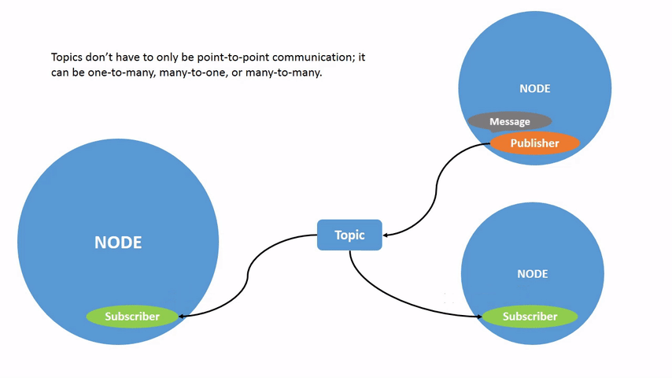
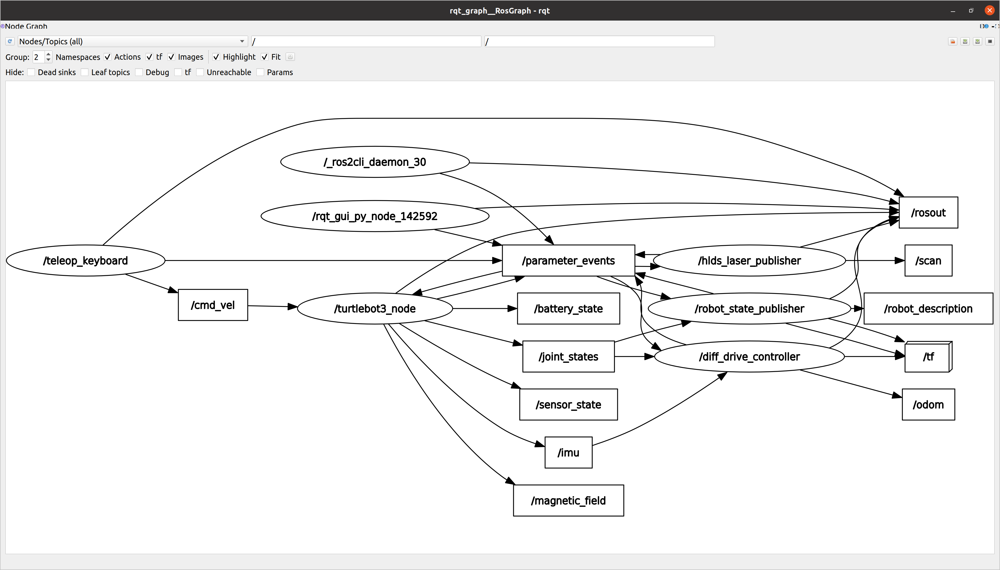
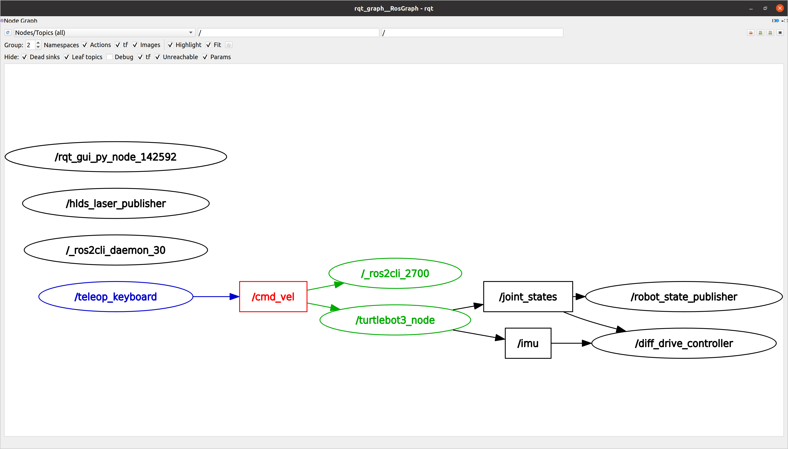

Understanding ROS 2 topics¶
Goal: Use rqt_graph and command line tools to introspect ROS 2 topics.
Tutorial level: Beginner
Time: 20 minutes
Contents
Background¶
ROS 2 breaks complex systems down into many modular nodes. Topics are a vital element of the ROS graph that act as a bus for nodes to exchange messages.

A node may publish data to any number of topics and simultaneously have subscriptions to any number of topics.
Topics are one of the main ways in which data is moved between nodes and therefore between different parts of the system.
Prerequisites¶
The previous tutorial provides some useful background information on nodes that is built upon here.
As always, don’t forget to source ROS 2 in every new terminal you open.
In addition, do not forget to run bringup on Raspberry Pi (Commands other than bringup should be running on the remotePC).
Tasks¶
1 Setup¶
By now you should be comfortable starting up turtlebot3 teleoperation.
Open a new terminal and run:
ros2 run turtlebot3_teleop teleop_keyboard
Recall from the previous tutorial that the names of these nodes are /teleop_keyboard by default.
2 rqt_graph¶
Throughout this tutorial, we will use rqt_graph to visualize the changing nodes and topics, as well as the connections between them.
To run rqt_graph, open a new terminal and enter the command on a remote PC where ros2 is installed:
rqt_graph
You can also open rqt_graph by opening rqt and selecting Plugins > Introspection > Node Graph.
You should see the above nodes and topic in the graph (let’s ignore the uncolored areas here).
If you hover your mouse over the /cmd_vel topic, you’ll see the color highlighting like in the image above.
The graph is depicting how the /turtlebot3_node node and the /teleop_keyboard node are communicating with each other over a topic.
The /teleop_keyboard node is publishing data (the keystrokes you enter to move the turtle around) to the /cmd_vel topic, and the /turtlebot3_node node is subscribed to that topic to receive the data.
The highlighting feature of rqt_graph is very helpful when examining more complex systems with many nodes and topics connected in many different ways.
rqt_graph is a graphical introspection tool. Now we’ll look at some command line tools for introspecting topics.
3 ros2 topic list¶
Running the ros2 topic list command in a new terminal will return a list of all the topics currently active in the system:
/battery_state
/cmd_vel
/imu
...
ros2 topic list -t will return the same list of topics, this time with the topic type appended in brackets:
/battery_state [sensor_msgs/msg/BatteryState]
/cmd_vel [geometry_msgs/msg/Twist]
/imu [sensor_msgs/msg/Imu]
...
These attributes, particularly the type, are how nodes know they’re talking about the same information as it moves over topics.
If you’re wondering where all these topics are in rqt_graph, you can uncheck all the boxes under Hide:
For now, though, leave those options checked to avoid confusion.
4 ros2 topic echo¶
To see the data being published on a topic, use:
ros2 topic echo <topic_name>
Since we know that /teleop_keyboard publishes data to /turtlebot3_node over the /cmd_vel topic, let’s use echo to introspect on that topic:
ros2 topic echo /cmd_vel
At first, this command won’t return any data.
That’s because it’s waiting for /teleop_keyboard to publish something.
Return to the terminal where teleop_keyboard is running and use the arrows to move the turtle around.
Watch the terminal where your echo is running at the same time, and you’ll see position data being published for every movement you make:
linear:
x: 0.01
y: 0.0
z: 0.0
angular:
x: 0.0
y: 0.0
z: 0.0
---
Now return to rqt_graph and uncheck the Debug box.
/_ros2cli_2700 is the node created by the echo we just ran (the number might be different).
Now you can see that the publisher is publishing data over the cmd_vel topic, and two subscribers are subscribed.
5 ros2 topic info¶
Topics don’t have to only be point-to-point communication; it can be one-to-many, many-to-one, or many-to-many.
Another way to look at this is running:
ros2 topic info /cmd_vel
Which will return:
Type: geometry_msgs/msg/Twist
Publisher count: 1
Subscription count: 2
Because /roscli_2700 and /turtlebot3_node subscribe to the /cmd_vel topic, the subscription count is 2.
6 ros2 interface show¶
Nodes send data over topics using messages. Publishers and subscribers must send and receive the same type of message to communicate.
The topic types we saw earlier after running ros2 topic list -t let us know what message type is used on each topic.
Recall that the cmd_vel topic has the type:
geometry_msgs/msg/Twist
This means that in the package geometry_msgs there is a msg called Twist.
Now we can run ros2 interface show <msg type> on this type to learn its details, specifically, what structure of data the message expects.
ros2 interface show geometry_msgs/msg/Twist
For the message type from above it yields:
# This expresses velocity in free space broken into its linear and angular parts.
Vector3 linear
Vector3 angular
This tells you that the /turtlebot3_node node is expecting a message with two vectors, linear and angular, of three elements each.
If you recall the data we saw /teleop_keyboard passing to /turtlebot3_node with the echo command, it’s in the same structure:
linear:
x: 0.01
y: 0.0
z: 0.0
angular:
x: 0.0
y: 0.0
z: 0.0
---
7 ros2 topic pub¶
Now that you have the message structure, you can publish data onto a topic directly from the command line using:
ros2 topic pub <topic_name> <msg_type> '<args>'
The '<args>' argument is the actual data you’ll pass to the topic, in the structure you just discovered in the previous section.
It’s important to note that this argument needs to be input in YAML syntax. Input the full command like so:
ros2 topic pub /cmd_vel geometry_msgs/msg/Twist "{linear: {x: 0.0, y: 0.0, z: 0.0}, angular: {x: 0.0, y: 0.0, z: 1.8}}"
You will receive the following message in the terminal:
publisher: beginning loop
publishing #1: geometry_msgs.msg.Twist(linear=geometry_msgs.msg.Vector3(x=0.0, y=0.0, z=0.0), angular=geometry_msgs.msg.Vector3(x=0.0, y=0.0, z=1.8))
And you will see your turtlebot3 move as it spin like so.
The turtle (and commonly the real robots which it is meant to emulate) require a steady stream of commands to operate continuously. So, to get the turtle to keep moving, you can run:
ros2 topic pub --rate 60 /cmd_vel geometry_msgs/msg/Twist "{linear: {x: 0.0, y: 0.0, z: 0.0}, angular: {x: 0.0, y: 0.0, z: 1.8}}"
The difference here is the addition of the --rate 60 option, which tells ros2 topic pub to publish the command in a steady stream at 1 Hz.
You can refresh rqt_graph to see what’s happening graphically.
You will see the ros 2 topic pub ... node (/_ros2cli_3045) is publishing over the /cmd_vel topic, and is being received by both the ros2 topic echo ... node (/_ros2cli_ 3033) and the /turtlebot3_node node now.
8 ros2 topic hz¶
For one last introspection on this process, you can view the rate at which data is published using:
ros2 topic hz /cmd_vel
It will return data on the rate at which the /teleop_keyboard node is publishing data to the cmd_vel topic.
average rate: 9.879
min: 0.101s max: 0.102s std dev: 0.00042s window: 11
Recall that you set the rate of /cmd_vel to publish at a steady 60 Hz using ros2 topic pub --rate 60.
The average is displayed reflecting the rate specified by the rate option.
9 Clean up¶
At this point you’ll have a lot of nodes running.
Don’t forget to stop them by entering Ctrl+C in each terminal.
Summary¶
Nodes publish information over topics, which allows any number of other nodes to subscribe to and access that information. In this tutorial you examined the connections between several nodes over topics using rqt_graph and command line tools. You should now have a good idea of how data moves around a ROS 2 system.
Next steps¶
Next you’ll learn about another communication type in the ROS graph with the tutorial Understanding ROS 2 services